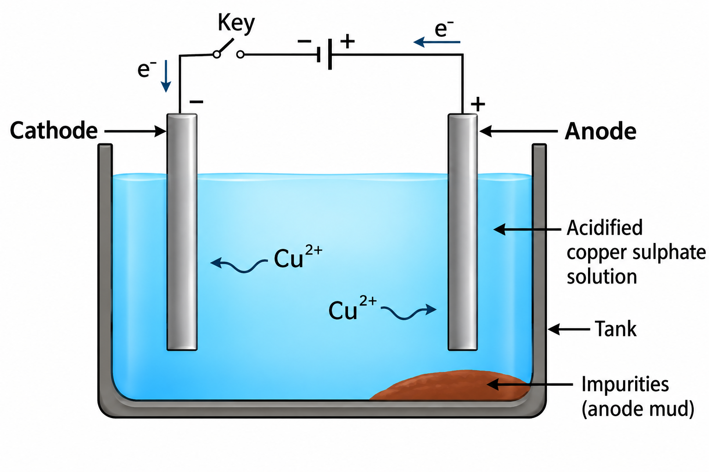
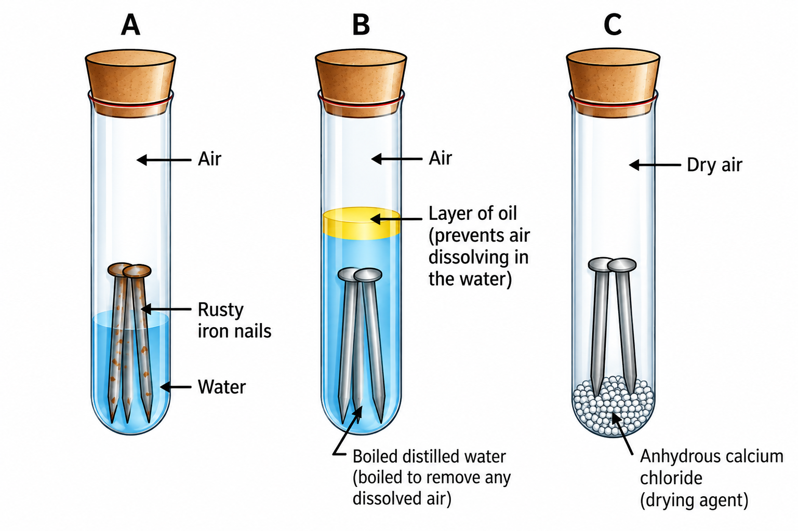

Chapter 03 | High-Fidelity Board Study Module
In Class IX, you learned that elements are classified into Metals and Non-metals based on their properties. Let's examine these through NCERT-mandated activities.

Experiment: Heat one end of a metal wire with a pin attached via wax at the other end.
Observation: The wax melts and the pin falls off, but the metal wire does not melt.
Inference: Metals are good conductors of heat and have high melting points.
Best Conductors: Silver (Ag) and Copper (Cu).
Poor Conductors: Lead (Pb) and Mercury (Hg).
Experiment: Set up a circuit with a gap for testing metal samples.
Observation: The bulb glows when metals like Cu or Al are connected.
Safety Note: Electric wires in homes are coated with PVC (Polyvinylchloride) or a rubber-like material because they are insulators.
Non-Metals (3.7): Examples include Carbon, Sulphur, Iodine, Oxygen. They are either solids or gases (except Bromine which is liquid).
Nature of Oxides (3.8):
• Most Non-metals produce Acidic Oxides (e.g., $SO_2$).
• Deep-Cut: Some non-metal oxides are Neutral (e.g., Carbon Monoxide ($CO$), Nitric Oxide ($NO$), Nitrous Oxide ($N_2O$)).
• Most Metals produce Basic Oxides (e.g., $MgO$).
| Property | Exception Detail |
|---|---|
| State | Mercury is liquid at room temperature. |
| Melting Point | Gallium and Caesium melt on your palm (very low MP). |
| Lustre | Iodine is a non-metal but it is lustrous. |
| Allotropy (Carbon) | Diamond (Hardest natural substance) & Graphite (Good conductor). |
Metals behave differently when they react with air, water, and other substances. Their reactivity is the basis of the Reactivity Series.
Almost all metals combine with oxygen to form Metal Oxides. Most are basic, but some show unique properties.
Example: $2Cu + O_2 \rightarrow 2CuO$ (Black Copper(II) Oxide)
Example: $4Al + 3O_2 \rightarrow 2Al_2O_3$ (Aluminium Oxide)
NCERT Observation: Iron does not burn on heating, but iron filings burn vigorously when sprinkled in the flame of the burner. Similarly, Copper does not burn, but is coated with a thin layer of black copper(II) oxide.
Oxides which react with both acids and bases to produce salt and water are called Amphoteric Oxides.
Example 1 (Aluminium):
Example 2 (Zinc):
Anodising is a process of forming a thick oxide layer of aluminium. This layer makes it resistant to further corrosion. During the process, clean Al is made the Anode and electrolysed with dilute sulphuric acid. Oxygen gas evolved reacts with Al to form a protective oxide layer.
Note: This layer can be dyed easily to give aluminium articles an attractive finish.

Generally, Metal + Dilute Acid $\rightarrow$ Salt + $H_2$. However, Nitric Acid ($HNO_3$) is different.
Hydrogen gas is NOT evolved when a metal reacts with $HNO_3$ because it is a strong oxidising agent. It oxidises the $H_2$ produced to $H_2O$ and itself gets reduced to nitrogen oxides ($N_2O, NO, NO_2$).
Exceptions: Magnesium ($Mg$) and Manganese ($Mn$) react with very dilute $HNO_3$ to evolve $H_2$ gas.
A freshly prepared mixture of Concentrated HCl and Concentrated $HNO_3$ in the ratio 3:1. It is a highly corrosive, fuming liquid that can dissolve Gold and Platinum, even though neither acid can do so alone.
Why do some metals react vigorously while others remain inert? The answer lies in their position in the Reactivity Series.
Metal A + Salt Solution of B $\rightarrow$ Salt Solution of A + Metal B
If Metal A displaces Metal B from its solution, it is more reactive than B. This is the most reliable way to compare reactivities.
K > Na > Ca > Mg > Al > Zn > Fe > Pb > [H] > Cu > Hg > Ag > Au
(Most Reactive $\rightarrow$ Potassium | Least Reactive $\rightarrow$ Gold)
Elements react to achieve a stable, completely filled valence shell (Noble gas configuration).
Electronic Logic: Sodium (2,8,1) loses 1e- to become $Na^+$ (2,8 - Neon config). Chlorine (2,8,7) gains 1e- to become $Cl^-$ (2,8,8 - Argon config).
Ionic Compounds: Formed by the transfer of electrons from a metal to a non-metal. These are also called Electrovalent Compounds.
The earth's crust is the major source of metals. Soluble salts of metals are also present in seawater (such as sodium chloride and magnesium chloride). Metals occur either in the free state (low reactive metals like Gold, Silver, Platinum) or in the form of compounds (oxides, sulphides, carbonates).

Ores mined from the earth are associated with large amounts of gangue (sand, soil, clay). These impurities must be removed prior to the extraction of the metal. The concentration process is based on the physical and chemical differences between the gangue and the ore (e.g., hydraulic washing, magnetic separation, froth floatation, or chemical leaching).
Metals at the bottom of the activity series are unreactive. Oxides of these metals can be reduced to metals by heat alone without requiring any additional chemical reducing agent.
Example 1: Extraction of Mercury from Cinnabar ($HgS$):
When cinnabar (mercuric sulphide) is heated strongly in air, it first converts to mercuric oxide ($HgO$), which on further heating decomposes into liquid mercury:
$2HgS(s) + 3O_2(g) \xrightarrow{\text{Heat}} 2HgO(s) + 2SO_2(g)$
$2HgO(s) \xrightarrow{\text{Heat}} 2Hg(l) + O_2(g)$
Example 2: Extraction of Copper from Copper Glance ($Cu_2S$):
Copper sulphide ore is heated in air to convert a part of it into copper(I) oxide. The remaining $Cu_2S$ then reacts with $Cu_2O$ (auto-reduction / self-reduction) to yield copper metal:
$2Cu_2S(s) + 3O_2(g) \xrightarrow{\text{Heat}} 2Cu_2O(s) + 2SO_2(g)$
$2Cu_2O(s) + Cu_2S(s) \xrightarrow{\text{Heat}} 6Cu(s) + SO_2(g)$
Metals in the middle of the activity series (such as $Fe, Zn, Pb, Cu$) usually occur as sulphide or carbonate ores in nature. It is much easier to obtain a metal from its oxide than directly from its sulphide or carbonate. Therefore, ores are first converted into metal oxides by Roasting or Calcination.
| Feature | Roasting | Calcination |
|---|---|---|
| Type of Ore | Used for Sulphide ores (e.g., $ZnS, PbS$). | Used for Carbonate ores and hydrated oxides (e.g., $ZnCO_3, CaCO_3$). |
| Air Supply | Heated strongly in excess air (oxygen) below the melting point. | Heated strongly in limited air or in the absence of air. |
| Gas Released | Evolves pungent Sulphur dioxide ($SO_2$) gas. | Evolves colourless Carbon dioxide ($CO_2$) gas. |
| Chemical Equation | $2ZnS(s) + 3O_2(g) \xrightarrow{\text{Heat}} 2ZnO(s) + 2SO_2(g)$ | $ZnCO_3(s) \xrightarrow{\text{Heat}} ZnO(s) + CO_2(g)$ |
Once converted to oxides, metals are obtained through reduction:
A. Reduction using Carbon (Coke / Smelting):
Metal oxides are heated with a suitable reducing agent such as carbon (coke):
$ZnO(s) + C(s) \xrightarrow{\text{Heat}} Zn(s) + CO(g)$
$Fe_2O_3(s) + 3C(s) \xrightarrow{\text{Heat}} 2Fe(s) + 3CO(g)$
B. Reduction using Displacement Reactions (Aluminothermy / Thermit Process):
Highly reactive metals like Aluminium ($Al$), Sodium ($Na$), or Calcium ($Ca$) can be used as reducing agents because they displace metals of lower reactivity from their oxides. These displacement reactions are highly exothermic, producing the extracted metal in a molten liquid state.
The reaction of iron(III) oxide ($Fe_2O_3$) with aluminium powder is known as the Thermit Reaction:
$$Fe_2O_3(s) + 2Al(s) \xrightarrow{\text{Ignition}} 2Fe(l) + Al_2O_3(s) + \text{Huge amount of Heat}$$
Application: The molten iron produced is directly used for joining cracked railway tracks and heavy broken machine parts.
Sister Reaction: Manganese dioxide with aluminium powder:
$$3MnO_2(s) + 4Al(s) \xrightarrow{\text{Heat}} 3Mn(l) + 2Al_2O_3(s) + \text{Heat}$$
Metals high in the reactivity series ($K, Na, Ca, Mg, Al$) cannot be reduced by carbon because these metals have a much greater affinity for oxygen than carbon does. Therefore, they are extracted by Electrolytic Reduction of their molten chlorides or oxides.
When electricity is passed through molten sodium chloride ($NaCl$):
Metals produced by reduction processes contain impurities and must be refined. The most widely used method for refining metals like Copper, Zinc, Tin, Nickel, Silver, and Gold is Electrolytic Refining.

Corrosion is the slow eating away or deterioration of metals by chemical or electrochemical reaction with atmospheric substances (moisture, oxygen, carbon dioxide, hydrogen sulphide).

Three Test Tubes Setup:
Rusting of iron can be prevented by painting, oiling, greasing, galvanising, chrome plating, anodising, or by making alloys.
Galvanisation: A method of protecting iron and steel from rusting by coating them with a thin layer of Zinc ($Zn$).
Why is it effective? Zinc is more reactive than iron. Even if the zinc coating is scratched or broken, zinc oxidises preferentially (sacrificial protection), preventing the underlying iron from rusting.
An alloy is a homogeneous mixture of two or more metals, or a metal and a non-metal. It is prepared by melting the primary metal and then dissolving the other elements in definite proportions, followed by cooling to room temperature.
| Alloy | Composition | Key Characteristics & Primary Uses |
|---|---|---|
| Steel | Iron ($Fe$) + Carbon ($0.05\% - 1.5\%$) | Pure iron is very soft and stretches easily when hot; adding small amount of carbon makes it hard and strong. |
| Stainless Steel | Iron ($Fe$) + Nickel ($Ni$) + Chromium ($Cr$) | Hard, highly ductile, and does not rust. Used for surgical instruments and utensils. |
| Brass | Copper ($Cu \approx 80\%$) + Zinc ($Zn \approx 20\%$) | Malleable, lustrous golden finish, lower electrical conductivity than pure Cu. Used for musical instruments, decorative items, and fittings. |
| Bronze | Copper ($Cu \approx 90\%$) + Tin ($Sn \approx 10\%$) | Tough, resistant to corrosion, poor conductor of electricity. Used for statues, coins, and medals. |
| Solder | Lead ($Pb \approx 50\%$) + Tin ($Sn \approx 50\%$) | Low melting point (lower than constituent metals). Used for welding electrical wires together. |
| Amalgam | Mercury ($Hg$) + Any metal (e.g., Sodium or Silver) | Dental amalgam ($Ag-Sn-Hg$) used for tooth fillings; Sodium amalgam ($Na-Hg$) used as a reducing agent. |
The famous Iron Pillar near the Qutub Minar in Delhi was built more than 1600 years ago by Indian iron workers. It is 8 metres high and weighs approximately 6 tonnes (6000 kg). Despite centuries of exposure to sun and rain, it has not rusted due to the formation of a protective thin passive layer of magnetic iron oxide ($\mathrm{Fe_3O_4}$) on its surface, standing as testament to ancient India's advanced metallurgical prowess.
Pure gold, known as 24 Carat gold, is very soft and pliable, making it unsuitable for making sturdy jewelry. To improve hardness, it is alloyed with either Silver ($Ag$) or Copper ($Cu$). In India, 22 Carat gold is commonly used, which means 22 parts by mass of pure gold is alloyed with 2 parts of either copper or silver.
 VARDAAN COMET
VARDAAN COMET